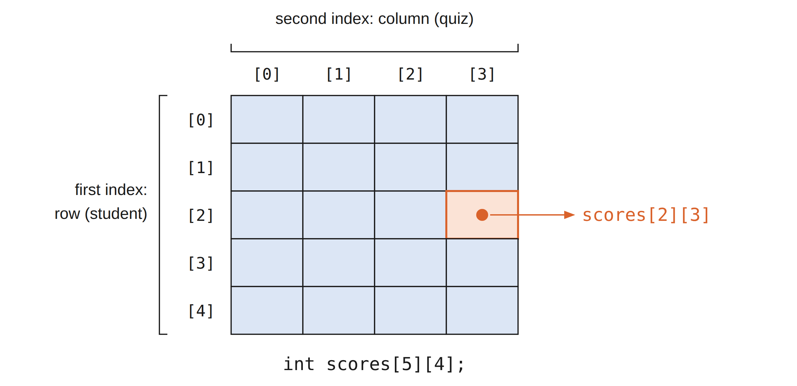
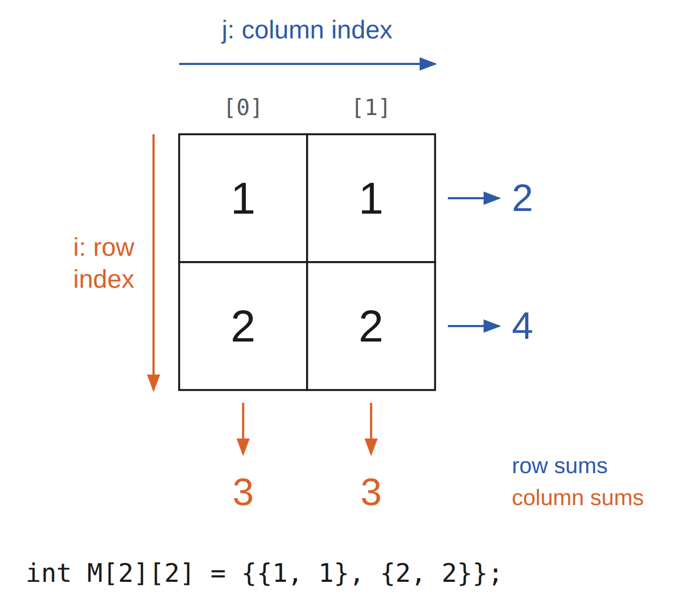
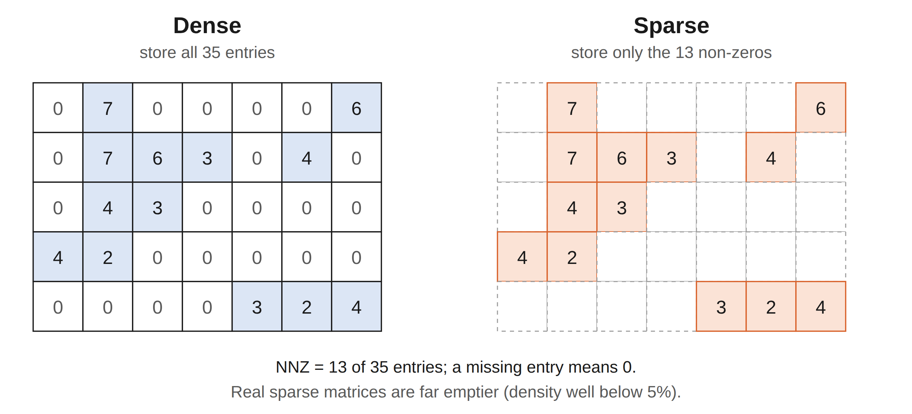

① 照節次讀：每一節先讀說明，再操作互動元件：先預測結果，再單步驗證。 ② 看收合區的標記：標「（補充）」的是講義沒有的延伸內容，第一輪可以略過；標「（與講義寫法不同）」的是和講義寫法不一樣的地方；沒有標記的收合區是講義內容，只因為篇幅較長而收起來，例如完整程式。 ③ 每節做 quiz：答錯就回到該節重讀，再往下讀。 ④ 最後做練習題、讀重點回顧，再翻關鍵詞彙卡（11 張）自測術語，並用陣列家族總覽當速查表。
低階陣列：連續、等寬的儲存格
陣列是 C、C++、Java 等許多語言共有的資料型別；std::vector 這類動態序列也是建立在陣列之上。一個陣列只存一種型別的資料：可以有整數陣列或浮點數陣列，但不能把兩者混在同一個陣列裡。陣列只支援兩種操作：用索引讀取，以及對某個索引指定新值。
把陣列想成記憶體裡一整段連續的位元組，切成大小相同的格子；每格多大，由元素型別決定。因此只要知道起始位址、索引和元素大小，就能直接算出元素的位置。
在 C++ 中，一個 double 通常佔 8 bytes，所以六個 double 的陣列 double a[6] 共佔 $6\times\operatorname{sizeof}(\mathrm{double})$ = 48 bytes。陣列開始的位置稱為基底位址（base address）。sizeof 可以查出任何型別或物件的大小，& 可以取得物件的位址：
sizeof 與 & 觀察陣列8 bytes per double 4 bytes per int 1 byte per char 48 bytes for the whole array 0x7ffd5c8e1a30 <- base address 0x7ffd5c8e1a38 <- 8 bytes later
位址以十六進位顯示，每次執行都可能不同；但 &data[1] 一定比 &data[0] 多 sizeof(double)（本例是 8）。int 與 double 的大小依平台而定，以 sizeof 的結果為準。
本章依序介紹低階陣列與 ArrayList、緊湊陣列與參考式陣列、二維矩陣如何攤平，以及 COO、DOK、線性串列三種稀疏矩陣表示。
原生陣列、std::array、std::vector 比較（補充）
| 比較 | 原生陣列 int a[3] | std::array<int,3> | std::vector<int> |
|---|---|---|---|
| 需要的標頭 | 不需容器標頭 | <array> | <vector> |
| 元素數量 | 固定；new[] 可在執行時決定配置大小，但配置後不變 | 固定；大小是型別的一部分 | 可增減，另有 capacity |
| 元素排列 | 元素連續儲存 | 元素連續儲存 | 元素連續儲存 |
| 查大小 | sizeof(a) / sizeof(a[0]) | a.size() | v.size() |
| 索引 | [] 不檢查 | [] 不檢查；.at() 檢查 | [] 不檢查；.at() 檢查 |
| 整體複製／指定 | 不能直接以 a=b 指定整個陣列 | 支援值複製 | 支援值複製 |
| 常見用途 | 理解底層與既有 C 介面 | 數量固定的資料 | 數量可能改變的一般序列 |
20 20 40 3 4
vector<bool> 為什麼是例外？（補充）
std::vector<bool> 是為 bool 提供的特殊化版本。為了節省空間，實作可以把多個布林值壓進位元中，因此不能把它看成一排可逐個取址的 bool 物件。
讀取 v[i] 可以得到布林值，也能用 v[i] = true 修改。但非 const 的索引運算子回傳的是代表該位元的代理物件，不是一般 vector 的元素參考，所以不能用 bool& r = v[i] 綁定它。學習本章的連續儲存與參考行為時，先用 vector<int> 理解即可。
陣列退化成指標後，為什麼不能用 sizeof 算長度？（補充）
對仍保有陣列型別的 int a[3]，sizeof(a) 是整個陣列的空間，除以一個元素的大小 sizeof(a[0])，就能得到元素數量 3。
但在 int* p = a 中，a 會轉換成指向第一個元素的指標，這個轉換稱為「陣列退化成指標」。p 只保存位址，不包含陣列有幾格的資訊，所以 sizeof(p) 算的是指標本身的大小，不能用來求陣列長度。
函式參數寫成 const int values[] 時，參數型別也會調整成 const int*，因此下面另外傳入 count 告訴函式元素數量：
3 20 10 20 30
std::array 與 std::vector 都提供 .size()，不必用這個除法取得元素數量。
位址計算與 ArrayList：從索引到動態擴容
位址公式：一次乘法、一次加法
陣列的索引運算只靠一個簡單的計算：第 i 個元素的位址是 $\mathrm{base}+i\times\operatorname{sizeof}(T)$。例如陣列從位址 0x000040（十進位 64）開始，每個 double 佔 8 bytes，索引 4 的元素就在 $64 + 4\times 8 = 96$。不論陣列有多長，都只做一次乘法和一次加法，所以索引是 $O(1)$。
在下方點選一格，依序看「索引 → 位元組偏移 → 加上基底 → 讀寫」。最右邊的 a[6] 是陣列尾端之後的位置（one-past）：可以算出它的位址，但不能讀寫。
a[i] 的成本相同，不用走訪。② 格子必須等寬，所以陣列的元素是同一種型別。
a[6] 是尾端之後的位置，不屬於陣列。兩個風險：大小固定，也不檢查邊界
第一，陣列大小固定，不能一直往尾端加元素。第二，C++ 原生 [] 不檢查邊界：int a[3] 只有三格，寫入 a[3] 不是追加，而是越界，不會自動產生錯誤訊息。
在 Linux 上，越界存取常會得到「segmentation fault」，這個錯誤訊息幾乎看不出原因。但越界寫入是未定義行為：它可能改壞別的資料而沒有任何訊息，所以不能用「程式沒當掉」判斷索引合法。
動態陣列的策略
std::vector 這類動態陣列採用以下策略：
- 配置一個有額外容量的原生陣列，並記住實際用了幾格。
- 陣列滿了，就配置一個更大的陣列（通常是兩倍），把元素複製過去，再釋放舊陣列。元素仍連續存放，索引維持 $O(1)$。
因此 vector 的 capacity() 可以大於 size()，多數 push_back() 不需要重新配置。下面用一個只存 int 的簡化類別 ArrayList 實作這個策略。
ArrayList 的成員與建構
類別有三個成員：maxSize 是目前陣列的容量；lastIndex 是目前的元素數量，也是下一個空位的索引；myArray 指向用 new int[maxSize] 配置的原生陣列。
ArrayList 的骨架：建構子與解構子建構子設定兩個整數成員，再配置 maxSize 格的陣列；預設容量是 8。解構子以 delete[] 釋放這塊陣列。接著是追加元素與查詢大小：
push_back、size、empty：類別內的方法片段操作時須維持 $0\le\mathrm{lastIndex}\le\mathrm{maxSize}$。例如容量 4、元素數量 3 時，只有索引 0、1、2 是有效元素；第 3 格雖然已配置，仍是留給下一次 push_back 的空位。課程標頭另有 capacity() 回傳 maxSize。
複製 ArrayList 物件時要注意什麼？（補充）
上面的骨架只有建構子與解構子。若直接複製物件，預設的複製只會複製 myArray 這個指標，兩個物件會共用同一塊陣列，各自解構時重複 delete[]。課程標頭另外寫了複製建構子與指定運算子，讓每個物件擁有自己的陣列（深層複製）。
索引運算子：檢查範圍，再回傳參考
內建的索引運算已經做了 base + idx * sizeof(int) 的計算；ArrayList 的 operator[] 先檢查索引，再交給它。索引不合法就丟出例外：
ArrayList 的索引運算子：類別內的方法片段回傳型別是參考 int&，也就是原元素的別名，不是複製出的整數。所以同一個運算子既能讀取 a[i]，也能指定 a[i] = val：放在讀取位置就讀其值，放在指定運算左邊就修改那一格。
完整程式：讀取複本、直接指定、保留別名
int x 是複本，int& r 是別名擴容會刪掉舊陣列，所以擴容前取得的參考 r 之後就失效；需要時應重新用索引取得。
10 50 50
對照：回傳 int 為何不能直接指定？（補充）
若把索引運算子的回傳型別改成 int，讀取仍可取得複本，但 a[i] = 42 不能編譯。
push_back 與 grow：滿了才換更大的陣列
push_back 先比較元素數量與容量；還有空位就直接寫入 myArray[lastIndex]，再把 lastIndex 加一。已滿時先呼叫 grow()：
grow：簡化片段（完整版另有容量上限檢查）grow 先配置新陣列，此時新舊陣列同時存在；把元素逐一複製過去後，才釋放舊陣列並更新指標與容量。只把 maxSize 改大，並不會真的多出儲存格。容量為零時先擴充到 1。
課程標頭 arraylist.hpp 全文
pythonds3/cppds/arraylist.hpp完整版的 grow 先確認加倍後不會超過 int 的上限；insert 與 erase 先檢查索引；另有 at、pop_back、clear 與深層複製。
insert：從尾端往前搬
在 ArrayList 中插入元素，要先把插入點與其後的元素都往後移一格，空出位置。下圖中 lastIndex 指向第一個空位：

搬移時不能蓋掉還沒複製的資料，所以要從陣列尾端往插入點方向，把資料往後複製。迴圈從 lastIndex 開始、往下到 idx + 1，所以第一次是把資料複製到尚未使用的空位，之後每次覆蓋的都是已經搬走的舊值。若從插入點開始往後複製，原本的值就會永遠遺失。
insert：類別內的方法片段講義的 insert 片段只列出搬移與寫入；這裡沿用課程標頭的寫法，開頭先確認 0 ≤ idx ≤ lastIndex（允許插在尾端），陣列已滿就先 grow。最壞情況是插在索引 0，整個陣列都要往後移，所以是 $O(n)$；平均也要搬一半，仍是 $O(n)$。
erase：從刪除點往後補
erase(idx) 刪除指定索引的元素：先檢查索引，再把 idx 之後的每個元素往前移一格，最後把 lastIndex 減一。

lastIndex，原本的末項位置就不再屬於有效元素。erase：類別內的方法片段檢查索引是 $O(1)$，之後要搬移 $n-1-i$dx 個元素。最壞情況是刪除第一個元素（idx = 0），所以也是 $O(n)$。刪除後，原本最後一格仍留著舊值，但它已不在有效區內。
逐步觀察：push_back、grow、insert、erase
選一個操作後單步執行。每一格都顯示 lastIndex（size）、maxSize（capacity）與迴圈變數 i，右側同步標出正在執行的程式行。insert 的每一步只做一次 a[i] = a[i-1]，所以中途會暫時出現兩個相同的值：這是複製，不是交換。
lastIndex）
不在有效區：仍有舊值，但不算元素
尚未寫入的空位完整示範：插入、刪除與印出 size、capacity
ArrayList 的使用範例預設容量是 8，這裡最多只有五個元素，所以容量始終是 8；erase 不會縮小容量。
31 77 17 93 (size 4, capacity 8) 93 4 77 17 20 93 (size 4, capacity 8) 50 17 93 (size 3, capacity 8)
| 操作 | ArrayList 的成本 | 原因 |
|---|---|---|
有效索引 [] | $O(1)$ | 固定次數的檢查與位址計算 |
size／empty | $O(1)$ | 讀取已記錄的元素數量 |
push_back | 攤還 $O(1)$；擴容那次 $O(n)$ | 多數直接填一格；擴容要複製 n 個元素 |
insert／erase | 最壞 $O(n)$ | 插入或刪除點之後的元素都要搬移 |
容量從固定值開始加倍時，各次擴容搬移的元素數形成 $1+2+4+\cdots$ 的等比級數。連續 push_back n 次，搬移總量是 $O(n)$，平均到每次是 $O(1)$。這是攤還分析：不是說每次操作都一樣快，而是一連串操作的總成本平均起來是常數。
grow() 的攤還成本從空的 ArrayList（初始容量 8，滿了加倍）連續 push_back n 個元素，總共大約搬移幾個元素？
vector實際寫程式時，建議使用 vector，它已處理好資源管理、複製與迭代器等細節；ArrayList 用來理解這些操作的成本。兩者有一點不同：課程 ArrayList 的 [] 會檢查索引，vector 的 [] 不檢查，要用 at 才有範圍檢查。vector 的成長倍率由實作決定，不一定是兩倍。
用 vector 看 size、容量與邊界（補充）
reserve 配置容量，並不新增元素2 true 99 out of range
此時 size 是 2，索引 2 仍越界。
元素本身的操作也要花時間（補充）
上表把單一 int 的複製視為 $O(1)$。若 vector 存的是字串或其他物件，複製、移動與解構這些元素本身也有成本，分析時要一起計入。
緊湊陣列與參考式陣列：格子裡存值，還是存連結？
假設要存一組名字，例如 {"Rene", "Joseph", "Janet", "Jonas", "Helen", "Virginia", ...}。陣列要求每格使用相同的位元組數，但名字長短不一，要怎麼放進陣列？
講義的作法是存一個指標陣列（string*）：每格放一個固定大小的位址（64 位元環境常見 8 bytes），字串本身存在別處。雖然字串長度不同，每格大小相同，索引仍是 $O(1)$。這種格子裡存「到其他物件的連結」的陣列稱為參考式陣列（referential array）。
不過，名字不一定要用指標陣列：std::string 物件本身的大小固定，字元另外存放、長度可以不同，所以 vector<string> 也能直接存放名字。陣列需要的只是「每格等寬」。
緊湊陣列：格子裡直接存資料
C-style string 例如 char s[] = "SAMPLE" 是一個 char 陣列，格子裡存的是字元本身，再加上結尾的 '\0'，不是指標陣列。陣列直接存放主要資料的位元（字串的情況就是字元），稱為緊湊陣列（compact array）。
index: 0 1 2 3 4 5 6
S A M P L E \0
讀取： S → A → M → P → L → E → \0（停止）
六個可見字元需要七格。C-style string 沒有另外記錄長度，strlen(s) 與 cout << s 都是一路讀到 '\0' 才停。sizeof(s) 是整個陣列的大小，包含終止字元；strlen(s) 是終止字元之前的字元數：
SAMPLE 7 6
少了終止字元會怎樣？（補充）
char 陣列，但不是 C-style string缺少終止字元時，輸出會繼續讀到陣列後方的記憶體，這是未定義行為。已知有六個字元時，可以用長度受控的迴圈，或 cout.write(s, 6) 輸出。
'\0' 是數值 0 的 char；'0' 是可見的數字字元，在 ASCII 編碼中數值為 48，兩者不同。strlen 要逐字掃描，成本與字串長度成正比。
緊湊結構的總記憶體用量通常低得多，因為不必另外存放一串記憶體位址。參考式陣列每格通常要 8 bytes 存位址，物件本身的空間還要另外計算。在 C++ 中，一般陣列本來就是緊湊的：元素型別決定每格佔幾個 bytes。
4 bytes per element 32 bytes in total 8 elements 24 bytes for three pointers
int a[6] 與 int* p[6]
元素型別告訴編譯器每個元素用幾個 bytes：int 4 bytes、double 8 bytes、char 1 byte。比較同樣存六個整數的兩種寫法（假設 int 4 bytes、指標 8 bytes）：
- 緊湊
int a[6]：陣列本體 $6\times 4 = 24$ bytes，值直接存在格子裡，沒有其他物件。 - 參考式
int* p[6]：陣列本體是六個指標，$6\times 8 = 48$ bytes；指向的六個int另外存放，再加 $6\times 4 = 24$ bytes。
下方選一個索引播放，比較兩種陣列「讀出 a[i]」需要的步驟：緊湊陣列定位槽位後直接讀值；參考式陣列定位後讀到的是位址，還要沿著指標找到目標物件才讀到值。
int 佔 4 bytes、指標佔 8 bytes。陣列 a 從位址 1000 開始；指標陣列 p 從位址 2000 開始，它指向的六個 int 散在其他位置。位址都是示意值。參考式：定位指標槽 → 讀出位址 → 沿箭頭找到物件 → 讀值。
緊湊與否看的是格子裡存的是不是主要資料本身，與容量是否等於元素數量無關：vector 預留了額外容量，元素仍直接連續存放，所以仍是緊湊的。
<cstdint> 的固定寬度型別 int32_t 與 int64_t 保證恰好 32 與 64 位元；一般的 int 與 long 大小由實作決定，要用 sizeof 確認。
Example 1：用 chrono 比較兩種走訪的時間
int 陣列與 vector<int*>：各把每個元素加一印出的時間依電腦、編譯選項與執行時的狀況而不同，請自己執行比較。緊湊版的資料連續排列，CPU 一次載入的快取區塊裡就有好幾個相鄰元素；指標版每次都要先讀位址、再跳到另一個位置讀值，分開配置的物件也不一定相鄰，因此通常較慢。
複製值與指向原物件，修改結果不同（補充）
10 77 99
指標指向的物件不一定在 heap，也可能是區域變數或靜態物件；使用時要確保目標仍然存在。
用 reference_wrapper 表示參考式陣列（補充）
C++ 不允許 int& refs[2] 這種「參考的陣列」。可以改存 <functional> 提供的 std::reference_wrapper<int>，用 std::ref 包住既有變數、.get() 取得其參考。
42 21
它和指標一樣不會延長目標物件的生命週期，但一定綁定某個物件，沒有 nullptr 的狀態。
走訪加總 $10^{6}$ 個 int，緊湊版通常較有利於快取，主因是？
多維陣列：把矩陣放進一維記憶體
目前為止的陣列只朝一個方向排列，稱為一維陣列。許多應用需要多於一個方向的資料，最常見的是由列（row）與欄（column）組成的表格，也就是二維陣列（矩陣）。以下一律使用零起始索引。

scores[2][3] 是第三位學生（列 2）的第四次小考（欄 3）成績：第一個索引選列，第二個索引選欄。例如 int scores[5][4] 存一個班級的成績：五位學生是列 [0]…[4]，每位學生四次小考是欄 [0]…[3]。超過二維的陣列也可以，例如 int cube[2][3][4]；它的元素同樣依序排在一段連續記憶體中。
二維陣列可以用巢狀大括號初始化。sizeof 除以一列的大小得到列數，一列的大小除以一個元素的大小得到欄數：
sizeof 算出列數與欄數M has 2 rows and 2 columns, 16 bytes in total

C++ 陣列沒有切片（slicing）語法：要讀一列，就固定 i、對 j 跑迴圈；要讀一欄，就固定 j、對 i 跑迴圈。
1 1 1 2 2
M[0] 本身是一整列，但直接 cout << M[0] 印出的是這一列開頭的位址，不是列中的數值。
記憶體排列：row-major 與 column-major
一維陣列的索引直接對應元素在記憶體中的相對位置；二維陣列卻有列與欄，而記憶體位址只有一維，所以 (i, j) 必須轉成一維的位置。Row-major 先存完一整列，再存下一列；column-major 先存完一整欄，再存下一欄。Row-major 比較常見。
Row-major 時，(i, j) 前面有 i 個完整的列，每列 Cols 格，再往後 j 格，所以 $\mathrm{offset}=i\times\mathrm{Cols}+j$。Column-major 時，前面有 j 個完整的欄，每欄 Rows 格，再往後 i 格，所以 $\mathrm{offset}=j\times\mathrm{Rows}+i$。
若起始位址是 B，每格佔 s = sizeof(T) bytes：
Row-major：$B+(i\times\mathrm{Cols}+j)\times s$
Column-major：$B+(j\times\mathrm{Rows}+i)\times s$
offset 是格數，乘上元素大小才是相對的位元組數。當每個元素只佔一個位置、起始位址為 x 時，講義寫成 y = x + Cols × i + j。
下方的儲存方式與走訪順序可以分開切換：切換走訪順序時，記憶體中的資料不會重排，只改變讀取順序。每一步先決定下一個 (i, j)，代入 offset 公式，再到記憶體帶上找到那一格，並顯示與前一次讀取相差多少 bytes。建議先在 row-major 下比較兩種走訪，再改成 column-major 看看。
int 佔 4 bytes，起始位址 $B=1000$。記憶體帶每格下方是 offset。沿記憶體順序走訪時，每步只前進一個元素；沿著跨列的方向走時，每步跳過 $\mathrm{Cols}\times\operatorname{sizeof}(T)$ bytes，換欄時又回到前方。連續走訪通常較有利於快取，實際差距取決於矩陣大小與硬體。
C++ 的二維陣列依定義採 row-major：語言標準保證 M[0][0]、M[0][1]、M[1][0]、M[1][1] 依序相鄰。印出位址就能直接看到：
0x7ffe2b4c9a90 0x7ffe2b4c9a94 0x7ffe2b4c9a98 0x7ffe2b4c9a9c
位址每次執行都可能不同，但相鄰元素一定相差 sizeof(int)（本例是 4 bytes），而且 M[1][0] 緊接在 M[0][1] 之後。
以 scores[5][4] 為例：scores[2][3] 的 row-major offset 是 $2\times 4+3 = 11$；若同一個邏輯矩陣改存成 column-major，offset 是 $3\times 5+2 = 17$。
需要 column-major 時，可以配置一維容器，自己用第二條公式定位。下面的迴圈把同一個 $2\times 3$ 矩陣同時存成兩種排列：
完整程式：用兩種公式保存相同的 $2\times 3$ 矩陣（補充）
1 2 3 4 5 6 1 4 2 5 3 6
二維 vector 與一維 vector：同樣能表示矩陣，配置不同（補充）
0 0 0 0 0 7 7
外層 vector 連續存放的是各列的 vector 物件，不是所有 int。每列自己的 int 連續，但相鄰兩列不保證接在一起，各列長度也可以不同。單一的一維 vector 才讓所有 int 連續；使用攤平公式前，仍須分別確認 i 小於 rows、j 小於 cols。
稀疏矩陣：COO、DOK 與線性串列
稀疏矩陣（sparse matrix）是大部分元素為零的矩陣。講義的判準是：非零元素個數（NNZ，Number of Non-Zero）除以總格數，若小於 0.05，就算稀疏；換句話說，稀疏度（sparsity，等於 1 減去密度）要大於 95%。

存下所有零值很浪費，所以稀疏表示假設沒記錄的位置都是 0。這樣可以比對應的密矩陣省記憶體，運算也可以更快。不同的稀疏格式各有長短：通常先用適合建構的格式收集資料，準備計算時再轉成適合計算的格式。
以下用同一個 $3\times 3$ 矩陣 A 比較三種表示；部分程式另以 $B=\operatorname{diag}(5,6,7)$ 作為另一個運算元。
COO：三條陣列的同一個索引是一筆資料
最容易理解的稀疏格式是座標格式（COOrdinate，COO）：用三個子陣列分別存列、欄與值。
第 k 項表示 A[row[k]][col[k]] = val[k]；三條陣列長度相同，讀取時把同一個 k 的列、欄與值一起看。矩陣越大，省下的記憶體越可觀；管理三個子陣列的額外成本，在資料變多後就相對很小。COO 適合依序收集資料；要找某個座標時，未排序的 COO 得逐項掃描。
COO 的加減乘：完整 C++ 程式與複雜度（補充）
加減使用兩個索引，由小到大比較座標。座標較小的一邊先輸出；相同時將值相加或相減，兩邊一起前進，結果為零就不存。append 必須按 (row,col) 遞增順序加入、同一座標只加一次，加減才能這樣合併，時間與輸出空間都是 $O(a+b)$，a、b 是兩邊的項數。
乘法把每個 $A(i,k)$ 與 $B(l,j)$ 配對，只有 $k=l$ 時產生對 (i,j) 的貢獻；不同 k 的貢獻要累加。設成功配對的乘積有 q 筆，先存下來再依座標排序、合併，時間為 $O(ab+q \log q)$。
(0,0):5 (0,1):2 (1,0):3 (1,1):6 (2,2):11 (0,0):-5 (0,1):2 (1,0):3 (1,1):-6 (2,2):-3 (0,1):12 (1,0):15 (2,2):28
三行依序是 $A+B$、$A-B$、$A\times B$。例如乘積的 (0,1) 是 $2\times 6=12$，(1,0) 是 $3\times 5=15$，(2,2) 是 $4\times 7=28$。
DOK：用座標當作 map 的鍵
{ (0,1):2, (1,0):3, (2,2):4 }
DOK（Dictionary Of Keys）和 COO 很像，差別是用一個 map，以 (row, column) 配對當鍵，把座標與值存成鍵值對。課程實作使用 std::map（平衡搜尋樹），查一次是 $O(\log \mathrm{nnz})$；改用 std::unordered_map（雜湊表）平均是 $O(1)$。需要關聯容器的功能時可以用這個格式，但樹或雜湊表的節點比陣列佔更多記憶體。
SparseMatrix 類別用 map<pair<size_t, size_t>, double> 存資料：鍵是列、欄配對，值是元素。
讀取的 operator()：查不到就回傳 0
只讀版本先用 find({i, j}) 查詢座標：找到時回傳儲存的值，找不到就回傳 0.0，表示這個位置是零。find 不會插入資料，所以讀取未記錄的位置後，map 的項目數仍不變。
const 版本的 operator()：只讀寫入的 operator()：回傳可修改的參考
const 版本的 operator() 與 nnz：類別內的方法片段非 const 版本回傳 double&，所以可以寫 m(i, j) = value。它用 map 的 [] 取值：座標不存在時，會先插入一個值為 0 的項目。
對非 const 物件呼叫 m(i, j) 時，編譯器選的是非 const 版本。所以即使只寫 double x = m(i, j) 讀值，空位置也會被插入一筆 0。只想讀取時，透過 const 參考呼叫，就會選到只查詢的 const 版本。
語法對照：const 如何決定 operator() 的版本（補充）
函式尾端的 const 表示這個成員函式不修改物件。對 const 物件，或透過 const SparseMatrix& 參考呼叫時，只能使用這個只讀版本。它回傳 double 的值，因此能直接回傳 0.0。
另一個版本沒有尾端的 const，回傳 double&，讓呼叫結果可以用來指定新值。選擇哪個重載，看的是呼叫物件的型別，不是這行程式最後有沒有賦值。對一般物件寫 double x = m(i, j)，仍會選到非 const 版本。
const SparseMatrix& view = m 是替同一個矩陣建立只讀參考，不會複製矩陣。下面用 view 讀取已存在與未記錄的位置，再看 m 的儲存項數。
const 參考讀取，再對照非 const 版本2 0 1 0 2
因此 nnz() 回傳的 data.size() 是儲存的項數，不一定等於真正的非零元素個數：讀取空位置、寫入 0 或加減後相消，都可能留下值為 0 的項目。
關係運算直接比較兩個 map；sparsity 則依給定的列數與欄數計算 $1-\frac{a}{\mathrm{rows}\times\mathrm{cols}}$，其中 a 是儲存項數。加減運算稍微複雜：任一個運算元出現的座標，都要出現在結果中。
operator+：類別內的方法片段第一個迴圈處理自己的每一項，加上 other 在同一座標的值；other 是 const 參考，所以 other(...) 用的是只查詢的 const 版本。第二個迴圈補上只出現在 other 的座標。減法的寫法相同。
乘法只需要走訪兩個運算元的非零項，這正是稀疏表示划算的地方：
operator*：類別內的方法片段只有 A 的欄索引等於 B 的列索引時，兩項相乘才會貢獻到結果的 (A 的列, B 的欄)；result(...) += 用非 const 版本，第一次遇到的座標會先插入 0 再累加。從密矩陣轉換時，只把非零值放進 map：
fromDenseMatrix：類別內的方法片段SparseMatrix 完整標頭與使用範例
pythonds3/cppds/sparsematrix.hpp標頭另提供以 map 建構的建構子、減法與 operator<<。下面的程式先從密矩陣轉換，再做加減乘：
SparseMatrix 的使用範例每一行把儲存的項目列成 (row, column): value，沒列出的位置都是 0。第三行的 (1, 1): -1 與 (2, 2): -1 是相減的結果，仍是非零。
(0, 0): 1 (1, 1): 2 (2, 2): 3 (0, 1): 1 (1, 1): 5 (2, 2): 7 (0, 1): 1 (1, 1): -1 (2, 2): -1 (0, 1): 3 (1, 1): 6 (2, 2): 12
使用這個 SparseMatrix 時要注意什麼？（補充）
類別不保存列數與欄數，因此不能自動檢查形狀或索引是否越界，sparsity 也要由呼叫端提供維度。operator== 比較的是 map 的儲存內容：一個物件存了 (0,0):0、另一個是空 map，兩者都表示零矩陣，但 == 會得到 false。fromDenseMatrix 不會先清空原有資料。
成本方面，加減法對每一項做 map 查詢或插入，時間上界是 $O((a+b) \log (a+b))$；乘法的兩層迴圈要檢查所有 a×b 個項目配對。
size_t 是什麼？（補充）
std::size_t 是 <cstddef> 提供的無號整數型別，用來表示物件大小，也是 sizeof 結果的型別。負數轉成 size_t 會變成很大的正數，所以讀入有號索引時，先確認非負且在維度內，再轉型。
線性串列：按座標串成一條鏈
第三種表示把每個非零項存成一個節點 {row, col, value, next}，依 row-major 順序串成一條串列：
structhead → (0,1,2) → (1,0,3) → (2,2,4) → nullptr

next 會跨過矩陣的列界線；空的第 2 列不需要節點。節點不必相鄰，要跟著 next 才找得到下一筆，所以找指定座標最壞要走過全部 nnz 個節點。兩條依座標排序的串列可以像合併一樣同時往前走。下一章會仔細說明這些指標怎麼連接。
線性串列的加減乘：完整 C++ 程式與複雜度（補充）
加減用兩個節點指標依序比較座標，做法與 COO 的合併相同；結果保存 tail，每次接到尾端只需 $O(1)$，整體時間 $O(a+b)$。乘法兩兩走訪節點，以 map 累加相同的結果座標，再依序輸出。
Linear：一條有序鏈結串列，加法、減法與乘法(0,0):5 (0,1):2 (1,0):3 (1,1):6 (2,2):11 (0,0):-5 (0,1):2 (1,0):3 (1,1):-6 (2,2):-3 (0,1):12 (1,0):15 (2,2):28
三行仍是 $A+B$、$A-B$、$A\times B$。類別解構時逐一釋放節點；此版本停用複製，並以移動建構把結果串列交給接收端，避免兩個物件重複釋放同一批節點。
操作矩陣，對照三種儲存內容
下面是展示格式用的 $5\times 6$ 小矩陣，預設有 4 個非零項，密度約 13%，並不符合 0.05 的稀疏判準，只用來對照格式。點一個格子選取它：COO 中同一個 k 的三格、DOK 的鍵與串列中的節點會同時標出。輸入數值後按「寫入」：改成另一個非零值時項數不變；寫入 0 則刪除該項。本互動只保存非零項。
row[k]、col[k]、val[k]。DOK 的鍵是 (row, col)。串列依 row-major 順序串接節點。map 加法成本兩個各有 n 筆儲存項的 DOK（std::map）相加，逐筆查詢與插入，時間上界為何？
為何不能只看非零項數，就斷定小矩陣用 DOK 一定省空間？
練習題
student 陣列的位址二維陣列 student 有 100 列、4 欄，存放在記憶體中。假設 student[0][0] 存在位址 0、每個元素只佔一個位置，而且電腦採 row-major 儲存。student[5][3] 的位址是多少？把下面程式中的 ? 換成你的答案。
s[?] 跨過好幾列，這樣寫可以嗎？（補充）
嚴格依 C++ 標準，s 指向的是第 0 列這個 4 個元素的陣列，用 s[23] 跨到其他列不在標準保證的範圍內；這個練習用它來對照位址公式，實際寫程式時請用 student[5][3] 這樣的二維索引。
double a[100]（每格 8 bytes），$\mathrm{base}=2000$。&a[13] 是？
int a[3][4]，base = 1000，每個 int 佔 4 bytes。&a[2][1] 是？
$10^{5}\times 10^{5}$ 的矩陣、約 $10^{6}$ 個非零，需要頻繁讀寫任意 (r, c)。選哪一種表示？
陣列家族總覽
| 表示 | 空間 | 讀取 | 適合用途 |
|---|---|---|---|
原生陣列／std::array | $O(n)$ | $O(1)$ | 大小固定；資料直接連續存放 |
vector<T>／ArrayList | $O(\mathrm{capacity})$ | $O(1)$ | 大小可變；中間增刪最壞 $O(n)$ |
| 指標陣列 | $O(n)$，目標物件另計 | $O(1)$，多一層間接存取 | 元素大小不一或要共用物件 |
| row-major／column-major 密矩陣 | $O(\mathrm{Rows}\times \mathrm{Cols})$ | $O(1)$ | 按公式定位；走訪順序影響快取 |
| COO | $O(\mathrm{nnz})$ | 未排序時 $O(\mathrm{nnz})$ | 依序收集三元組，建好後再轉換 |
DOK（std::map） | $O(\mathrm{nnz})$ | $O(\log \mathrm{nnz})$ | 隨機讀寫指定座標 |
| 有序線性串列 | $O(\mathrm{nnz})$ | $O(\mathrm{nnz})$ | 依序走訪、合併兩個矩陣 |
nnz 是儲存的項數。固定寬度的格子讓位置可以直接計算，帶來 $O(1)$ 索引；參考式與鏈結結構多一層間接存取。稀疏格式省下零值的空間，但每項要多存座標或指標。
重點回顧與常見疑問
- 陣列是一段連續、等寬的記憶體；第 i 個元素在 $\mathrm{base}+i\times\operatorname{sizeof}(T)$，所以索引是 $O(1)$。原生陣列大小固定，也不檢查邊界。
ArrayList用lastIndex記元素數量、maxSize記容量；滿了就配置兩倍大的陣列再複製，push_back攤還 $O(1)$。insert從尾端往前搬、erase從刪除點往後補，最壞 $O(n)$。- 緊湊陣列直接存放主要資料；參考式陣列存放到其他物件的連結，取值要多一層間接存取，物件空間另計。
- 二維陣列要攤平成一維：row-major 的 $\mathrm{offset}=i\times\mathrm{Cols}+j$，column-major 的 $\mathrm{offset}=j\times\mathrm{Rows}+i$。C++ 原生二維陣列採 row-major。
- 密度（NNZ／總格數）小於 0.05 的矩陣算稀疏。COO 用三條陣列、DOK 用以座標為鍵的
map、線性串列用依座標排序的節點，都只記錄有存的項目，沒記錄的位置視為 0。本課的 DOK 在寫入 0、非const讀取空位置或加減相消時，可能留下值為 0 的項目。
常見疑問
為什麼索引從 0 開始？（補充）
索引其實是「離起點幾格」。第一個元素就在基底位址上，偏移 0 格，位址公式 $\mathrm{base}+i\times\operatorname{sizeof}(T)$ 代入 i = 0 剛好是 base，不必再減一。
為什麼陣列的元素要同一種型別？（補充）
位址公式只用一個 sizeof(T)，前提是每格一樣寬。若要存長短不同的資料，就讓每格存固定大小的東西，例如指標或 string 物件，真正長度不同的部分放在別處。
push_back 是不是永遠 $O(1)$？（補充）
不是。容量已滿時，要配置新陣列並複製全部元素，那一次是 $O(n)$。但容量加倍後，可以再放入更多元素，才需要下一次擴容。
以初始容量 $8$、連續 push_back $40$ 次為例：第 $9$、$17$、$33$ 次加入時擴容，分別搬移 $8$、$16$、$32$ 個元素。只數元素的寫入與搬移，加上每個新元素寫入一次，總共是：
攤到每次 push_back，平均是 $\frac{96}{40}=2.4$ 次元素操作。
一般連續加入 $n$ 個元素（$n\ge1$）時，若有擴容，搬移量是等比級數：總和不到最後一項的兩倍，而最後一次搬移的元素數小於 $n$，所以全部搬移量小於 $2n$；沒有擴容時搬移量就是 $0$。加上 $n$ 次新元素寫入：
$$\frac{n+\text{搬移總次數}}{n}\lt \frac{n+2n}{n}=3$$邊界判斷等固定步驟加進去，總成本仍是 $O(n)$；除以 $n$ 次操作，每次的攤還成本就是 $O(1)$。這是在計算整段操作的平均成本，個別遇到擴容的那一次仍可能花 $O(n)$。
區域陣列和 new 出來的陣列有什麼不同？（補充）
int a[6] 這種區域陣列在函式的堆疊（stack）上，大小要在編譯時決定，離開作用域就自動釋放。new int[n] 配置在 heap（自由儲存區），大小可以在執行時決定，用完要自己 delete[]。兩者的元素都連續存放，索引方式相同。
COO 和 DOK 各適合什麼情況？（補充）
COO 適合依序收集 (row, col, value) 三元組、一次建好，之後再轉成適合計算的格式；在未排序的 COO 中找特定座標要逐項掃描。DOK 適合反覆讀寫任意座標，std::map 每次查詢 $O(\log \mathrm{nnz})$，代價是每項的節點額外空間較多。
關鍵詞彙卡：點卡片翻面 題庫 ch3.json · 11 張
詞彙卡取自本章課程題庫，已譯為繁體中文，正面附英文原名。先看正面術語，試著說出定義，再翻面核對；不熟的詞可以洗牌後再練習。